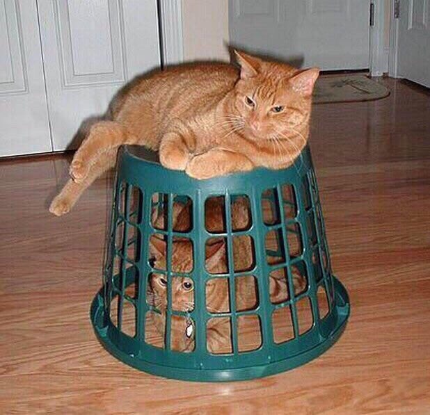

Uładzimir Śniežka
Ways to contact me:
- Telegram - @vlashious
- VKontakte - link
- E-mail - flashro561@gmail.com
My skills are:
- C++ - studying it at the University rn,
- js - love this language. I think it is a bit (just a little bit) similar to C++,
- HTML, CSS - like js, I know it, but in a passive way. Hadn't had a good practice, yet. BUT! I want to try it ;p
My experience is mostly positive, even though I don’t have any job experience. Love coding, love creating algorithms and things in my head and then translating them into code and then watching it work is just SO PLEASANT. BUT! I hate what everyone hates - debugging >:(
I have completed some courses on coursera.com, and as I already said, I’m studying at the BSUIR. Won some olympiads at the school (1-st and 2-nd stages in 10 and 11 classes), so I have quite good level of English and vocabulary. I have some experience playing games with people speaking English, also I play only English version of games. Also some chatting in Discord with English speaking people too.